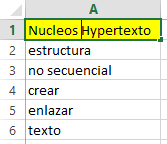
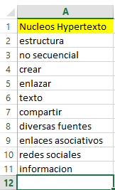

¿que tan sencillo es leer y entender?
una estadistica que maneja Didier Martinez dice lo siguiente
el 95% de las personas no lee .... el otro 5% lee y no entiende
mas loco que parezca esta estaditica no es tan descabellada cuando la llevamos a la realidad.
cuantos de nosotros al leer algo realmente almacenamos la informacion que el texto nos brinda?, si
leemos un texto, ¿podemos recordar de que hablaba, entendiendo su contexto en su totalidad?, ¿despues de
cuanto tiermpo se nos olvida de que trataba?.
para esto hay una tecnica de comprecion de lectura que conciste en leer un parafo e ir sacando una
especie de glosario, pero en lugar de ser palabras/conceptos que no conozcamos, estas
palabras/conceptos van a ser
las palabras clave que nos ayudaran a entender la idea del texto, es decir, dividir todo el texto, en
palabras faciles de recordar que nos ayuden a reconstruir la idea del texto a partir de ellas mismas,
uniendolas entre si
a estas palabras se les llama nucleos.
¿como funciona la comprencion de lectura por nucleos?
para entender un poco mejor como funciona vamos a seguir los siguientes 5 pasos para una buena practica de este tipo de lectura
Hacemos una lectura rapida para preparar nuestro cerebro a la actividad de leer y comprender, para asi contextualizarnos en lo que vamos a hacer
una vez hojeado el texto, vamos a leero de manera normal, pero por parrafos, tratando de entender su
contenido, como normalmente lo hariamos
como ejemplo tomare un parrafo de wikiperida, hacerca del Hipertexto
" El hipertexto es una estructura no secuencial que permite crear, agregar, enlazar y compartir información de diversas fuentes por medio de enlaces asociativos y redes sociales. El hipertexto es texto que contiene enlaces a otros textos. El término fue acuñado por Ted Nelson alrededor de 1965. "
vamos a empezar a sacar los nucleos principales de el texto, es decir nuesta lista de conectores principales, y las vamos a anotar en un papel, block de notas, archivo exel, word, o lo que sea, pero la idea es anotarlas en orden que la vamos sacando, obviamente, todas las que creamos necesarias, no hay limite, pero, deben ser claves para reconstruir la idea principar a partir de cualquiera de ellas pero ojo.. estos conceptos iniciales van a ser de los que nos acordemos sin nesecidad releer el texto
una vez hecha lalista de conceptos inicial, vamos ahora si a releer el texto y a agregar mas ideas, que creamos importantes o necesarias para recontruir la idea
ahora vamos a reconstruir la idea de el texto que leimos, usando unicamente los conceptos clave que sacamos el parrafo principal, iniciando desde cualquiera de ellas, y conectandolas consecuticamente, para llegar al resultado final, la idea principal del texto, con nuestras propias palabras no es necesario usar todas, pero si se deberia usar gran parte de ellas
ejemplo
usando las palabras sacadas del texto, armare frases diferentes, con la misma idea principal
el Hypertexto es estructura no secuencial que tiene informacion proveniente de
enlaces hacia redes sociales o diversas fuentes que permiten crear,compartir
y enlazar texto
el Hypertexto es texto que permite crear,compartir,enlazar informacion de diversas
fuentes mediante enlaces asociativos o redes sociales en una estructura no
secuencial
el Hypertexto es enlazar,crear texto hacia redes sociales o diversar fuentes usando
enlaces asociativos para asi compartir informacion en una estructura no
secuencial
al finalizar, pudimos vizualizar como a partir de palabras clave armamos 3 oraciones diferentes en su estructura y orden, pero con la misma idea en comun (Paso 4), que incluso es la misma que el parrafo original, que se planteo para realizar el ejercicio (Paso 1)